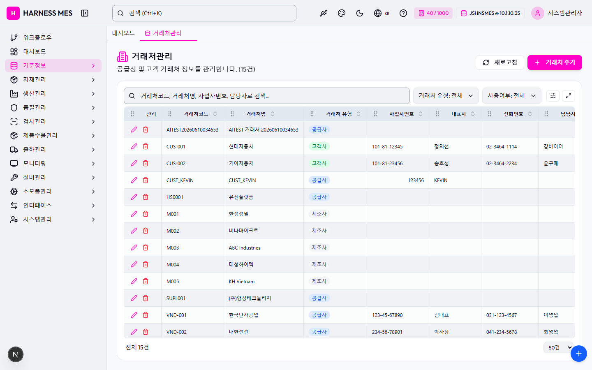

Route: /master/partner
Status: PASS / HTTP 200
| 기능/버튼 | 처리 방식 | 상태 | 비고 |
|---|---|---|---|
| 화면 로드 | GET /master/partner | 실행 | HTTP 200 |
| 라우트 prewarm | 직접 HTTP 확인 | 실행 | HTTP 200, 21192ms |
| 초기 API 호출 | 브라우저 네트워크 수집 | 실행 | 12건 |
| 🇰🇷 | 화면 버튼 목록화 | 목록화 | 후속 메뉴별 세부 시나리오 실행 대상 |
| 시스템관리자 | 화면 버튼 목록화 | 목록화 | 후속 메뉴별 세부 시나리오 실행 대상 |
| 워크플로우 | 화면 버튼 목록화 | 목록화 | 후속 메뉴별 세부 시나리오 실행 대상 |
| 대시보드 | 화면 버튼 목록화 | 목록화 | 후속 메뉴별 세부 시나리오 실행 대상 |
| 기준정보 | 화면 버튼 목록화 | 목록화 | 후속 메뉴별 세부 시나리오 실행 대상 |
| 자재관리 | 화면 버튼 목록화 | 목록화 | 후속 메뉴별 세부 시나리오 실행 대상 |
| 생산관리 | 화면 버튼 목록화 | 목록화 | 후속 메뉴별 세부 시나리오 실행 대상 |
| 품질관리 | 화면 버튼 목록화 | 목록화 | 후속 메뉴별 세부 시나리오 실행 대상 |
| 검사관리 | 화면 버튼 목록화 | 목록화 | 후속 메뉴별 세부 시나리오 실행 대상 |
| 제품수불관리 | 화면 버튼 목록화 | 목록화 | 후속 메뉴별 세부 시나리오 실행 대상 |
| 출하관리 | 화면 버튼 목록화 | 목록화 | 후속 메뉴별 세부 시나리오 실행 대상 |
| 모니터링 | 화면 버튼 목록화 | 목록화 | 후속 메뉴별 세부 시나리오 실행 대상 |
| 설비관리 | 화면 버튼 목록화 | 목록화 | 후속 메뉴별 세부 시나리오 실행 대상 |
| 소모품관리 | 화면 버튼 목록화 | 목록화 | 후속 메뉴별 세부 시나리오 실행 대상 |
| 인터페이스 | 화면 버튼 목록화 | 목록화 | 후속 메뉴별 세부 시나리오 실행 대상 |
| 시스템관리 | 화면 버튼 목록화 | 목록화 | 후속 메뉴별 세부 시나리오 실행 대상 |
| 거래처관리 | 화면 버튼 목록화 | 목록화 | 후속 메뉴별 세부 시나리오 실행 대상 |
| 새로고침 | 화면 버튼 목록화 | 목록화 | 후속 메뉴별 세부 시나리오 실행 대상 |
| 거래처 추가 | 화면 버튼 목록화 | 목록화 | 후속 메뉴별 세부 시나리오 실행 대상 |
| 전체화면 보기 | 화면 버튼 목록화 | 목록화 | 후속 메뉴별 세부 시나리오 실행 대상 |
| AI 채팅 | 화면 버튼 목록화 | 목록화 | 후속 메뉴별 세부 시나리오 실행 대상 |
| 개선요청 등록 | 화면 버튼 목록화 | 목록화 | 후속 메뉴별 세부 시나리오 실행 대상 |
| 입력 필드 | DOM 수집 | 목록화 | 2개 |
| 선택 필드 | DOM 수집 | 목록화 | 3개 |
| 목록/그리드 | DOM 수집 | 목록화 | table 1, grid 0 |
| Method | URL | Status | OK |
|---|---|---|---|
| GET | /api/health | 200 | OK |
| GET | /api/db-info | 200 | OK |
| GET | /api/health | 200 | OK |
| GET | /api/db-info | 200 | OK |
| GET | /api/db-info | 200 | OK |
| GET | /api/auth/me | 200 | OK |
| GET | /api/system/comm-configs?commType=SERIAL&useYn=Y | 200 | OK |
| GET | /api/system/configs/active | 200 | OK |
| GET | /api/ai/page-tools/master.partner | 200 | OK |
| GET | /api/menu-categories/tree | 200 | OK |
| GET | /api/master/partners?limit=5000 | 200 | OK |
| GET | /api/master/com-codes/all-active | 200 | OK |
수집된 오류 없음

H HARNESS MES 🇰🇷 40 / 1000 JSHNSMES @ 10.1.10.35 시스템관리자 워크플로우 대시보드 기준정보 자재관리 생산관리 품질관리 검사관리 제품수불관리 출하관리 모니터링 설비관리 소모품관리 인터페이스 시스템관리 대시보드 거래처관리 거래처관리 공급상 및 고객 거래처 정보를 관리합니다. (15건) 새로고침 거래처 추가 거래처 유형: 전체 거래처 유형: 공급사 거래처 유형: 고객사 거래처 유형: 제조사 사용여부: 전체 사용여부: 사용 사용여부: 미사용 관리 거래처코드 거래처명 거래처 유형 사업자번호 대표자 전화번호 담당자 이메일 사용여부 AITEST20260610034653 AITEST 거래처 20260610034653 공급사 Y CUS-001 현대자동차 고객사 101-81-12345 정의선 02-3464-1114 강바이어 purchase@hyundai.com Y CUS-002 기아자동차 고객사 101-81-23456 송호성 02-3464-2234 윤구매 scm@kia.com Y CUST_KEVIN CUST_KEVIN 공급사 123456 KEVIN Y HS0001 유진플랫폼 공급사 Y M001 한성정밀 제조사 Y M002 비나마이크로 제조사 Y M003 ABC Industries 제조사 Y M004 대성하이텍 제조사 Y M005 KH Vietnam 제조사 Y SUPL001 (주)행성테크놀러지 공급사 Y VND-001 한국단자공업 공급사 123-45-67890 김대표 031-123-4567 이영업 sales@kterm.co.kr Y VND-002 대한전선 공급사 234-56-78901 박사장 041-234-5678 최영업 wire@daehan.co.kr Y VND-003 삼화부자재 공급사 345-67-89012 정대표 031-345-6789 한구매 info@samhwa.co.kr Y VND_KEVIN VND_KEVIN 공급사 123456 KEVIN Y 전체 15건 20건 50건 100건 200건 500건 전체화면 보기 AI 채팅 개선요청 등록